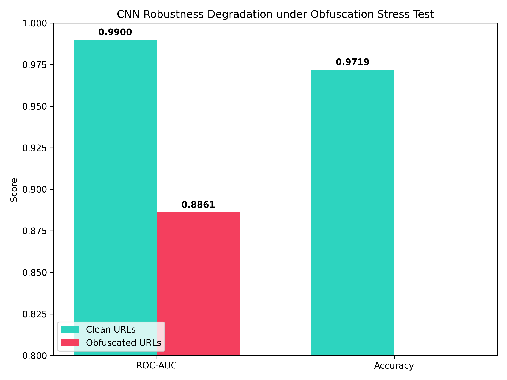

URL-based detection for links shared on social platforms
The demo stays focused on URLs themselves. We are not building platform-specific integrations here, which matches the proposal.
CSE 543 Group Project
This page is the live demo for our project on phishing and malicious URL detection. It lets us test the binary phishing model, the 4-class URL family model, and the mitigation flow in one place.
The demo stays focused on URLs themselves. We are not building platform-specific integrations here, which matches the proposal.
Live Analysis
Paste a URL and run either the phishing detector or the 4-class model.
Explainability
Session Trace
Project Fit
We use URLs as the main input, which is exactly how the proposal scopes the project.
The page supports the binary phishing CNN and the 4-class URL family CNN.
Stress-test and cross-dataset results are shown here so we can talk about generalization, not just accuracy.
Each output includes a suggested response: allow, review, or block.
Saved Results
Loaded from the most recent local output files.
